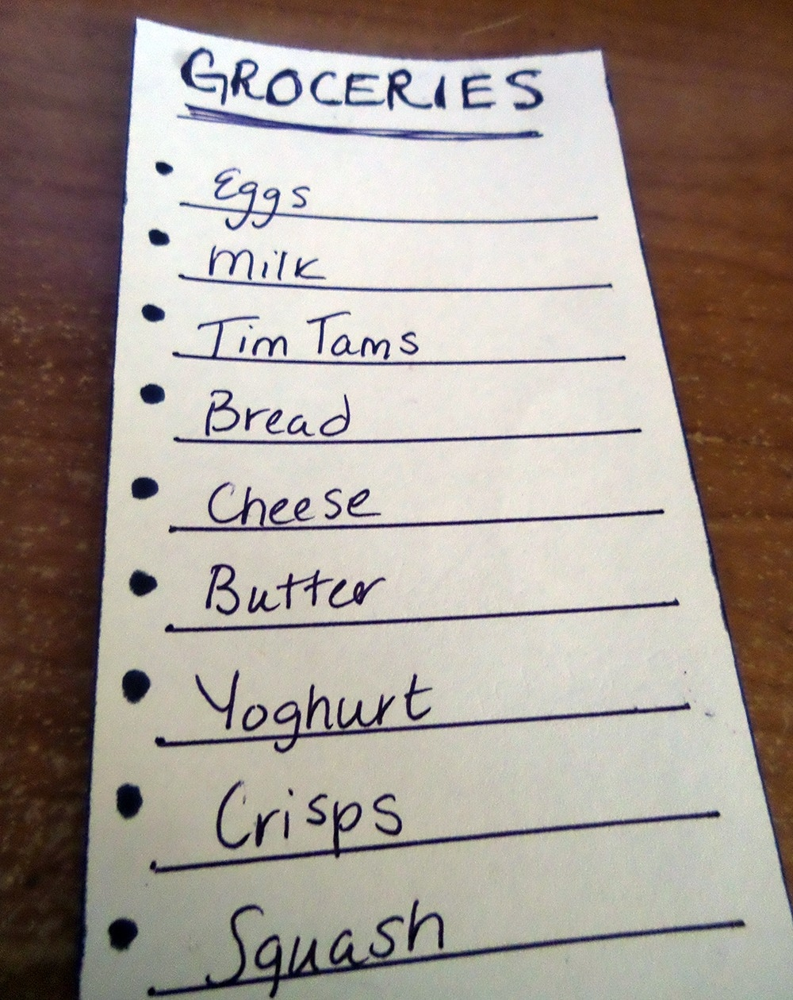

If, like us you're into the first year of uni wondering where all that student loan has disappeared, don't despair, we've got a few tips to make sure that doesn't happen again.
First of all, budgeting. Yes, we know...THAT dreaded word. Possibly the most important thing you'll learn to successfully survive in uni. Here's what we've done to make budgeting as stress free as possible, and how to make sure you stick to it:
Come up with a figure to roughly stick to. As daunting as that sounds, its important to come up with a price limit on your weekly grocery shopping. We found from our weekly Morrissons shopping experience that the £20 mark is a good shout to begin with.
Once you've worked out what amount is your ideal spend, its now time to think about what exactly you NEED and WANT. It is really important to differentiate between necessities and luxuries. Also we found that deciding what you have to buy after figuring out what you want to spend is the best way to save money. Why? Because when you make a shopping list before setting a limit, there are no restrictions, the list ends up being a lots longer than necessary, and happens to contain a worrying amount of Ben and Jerry's in our case! Coming up with the amount first allows you to subconsciously decrease impulse buys.

The final step is to make sure you stick to the budget. We realise it is virtually impossible to resist the treats on offer, which is why we think you should add a few extra pounds to your initail budget. This will give you a bit of flexibility and allows you buy those random things that you wnat to buy! It also means you won't feel guilty in the end. Win-win.